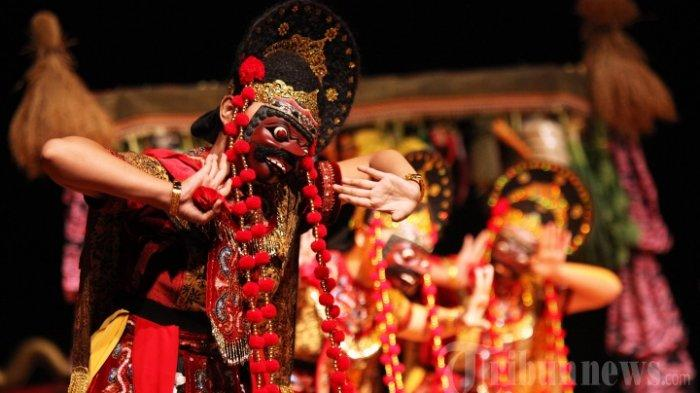

TARI TOPENG CIREBON (BEKSAN TOPENG CERBON)
Tari topeng cirebon adalah satu tarian di wilayah kesultanan Cirebon. Pada awalnya tari topeng bermula sejak era Jawa kuno di jawa timur, pada masa-masa
selanjutnya berkembang dan menyebar ke Jawa Tengah, Cirebon termasuk Subang, Indramayu, Jatibarang, Majalengka,
Losari, dan Brebes.Disebut topeng klana karena penarinya mengguakan topeng di saat menari. pada pementasan tari topeng cirebon, penarinya disebut sebagai dalang, dikarenakan mereka memainkan karakter topeng topeng tersebut.
Tari topng ini sendiri banyak sekali ragamnya dan mengalami perkembangan dalam hal gerakan, maupun cerita yang di sampaikan. Terkadang tari topeng oleh satu penari tarian solo, atau bisa juga dimainkan oleh beberapa orang.
sumber:TribbunewsWiki.com
ini adalah contoh busananya:
|  |
sumber:wikipedia